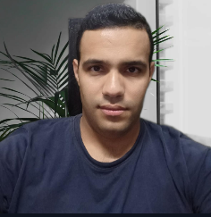

Hicham HR

Summary
I am a hardworking and dedicated individual with experience in customer service and administration
Education
- SUPMTI School Computer Systems Engineering (BAC+3)
- Meknes Faculty of Science | Moulay Ismail University (2016-2020)
Work experience
- work as a computer specialist with the Web Help call center in Meknes (2019-2021)
- working as an IT specialist with the united nations (2021-2022)
- working as an IT specialist with the united nations (2023-2024)
Skills
- Microsoft office suite (Word, Excel, PowerPoint, Outlook,...)⭐️⭐️⭐️⭐️⭐️
- Web Programming (HTML, CSS, JAVASCRIPT, PHP, BOOTSTRAP, MYSQL,...)⭐️⭐️⭐️⭐️
- artificial intelligence tools⭐️⭐️⭐️⭐️